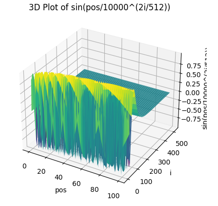
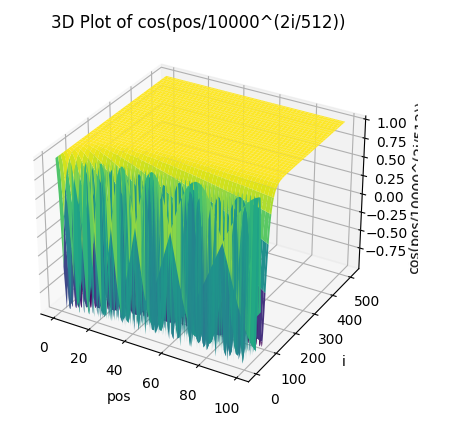
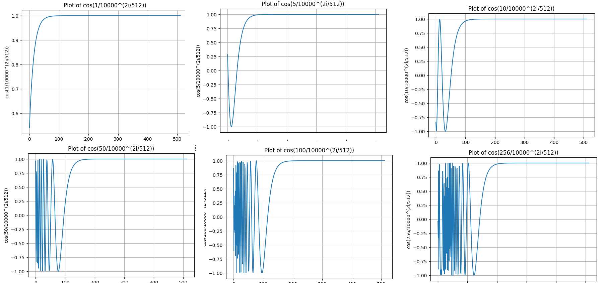

为什么需要PE?
序列信息在多种模态中都是十分重要的信息，在文字信息中，token的顺序和位置会影响句子的意思。
I do like the cat of the game , not the cat.
I do like the dog of the game , not the dog.可以看到仅仅调换了cat和dog的位置，两句话的意思就相反。
在RNN中，会将上一个时间步的信息作为当前的输入。在CNN for seq2seq中，常使用一维卷积核来处理序列信息。
transformer使用了注意力机制，这样模型的并行度很高。然而我们观察transformer的Attention，发现本身是不具备序列信息的(若无PE作为输入)。
所以需要在做Attention计算之前，通过某种方式将词序信息引入。
好的PE应满足？
首先我们可以考虑一种最简单的实现方法，使用每一个token出现的位置直接作为PE，如第一个单词赋值1，第二个单词赋值2。然而这种方法最后的值会相当的大，并且模型的外推性很差。
另一个想法稍微改进，将值定为有界的，如[0,1]，这种方法的缺点是时间步长在不同句子之间没一致的含义。
i love the cat. [0, 0.25, 0.5, 0.75, 1.00]
i love. [0, 0.5, 1.00]上面的例子中，0.5均有出现，然而在第一个句子中代表第三个token，而在第二个句子中则代表第二个token。这是由于在不同长度的两个句子中步长不同，导致了编码不唯一。
所以理想的PE应该满足：
- 每一个时间步(token位置)的编码应该是唯一的。
- 任意两个时间步之间的距离应该在不同长度的句子保持一致。
- 有界，不能野蛮增长，有助于外推。
- 确定性，能准确计算。
PE可以分为absolute，relative，和其他。
PE的分类
大致可以分为绝对位置编码(Transformer)，相对位置编码(T5)，可训练的位置编码(Bert)，混合位置编码(ALBERT)等等。
sinusoid
absolute代表PE会与Emb直接相加，作为Attention的输入。sinusoid，也就是Transformer论文中所使用的，属于绝对位置编码。具体公式如下。
三角函数波的频率为


从上图看到，
我们固定几个pos，从中取出几个切片。


随着pos的变大，高频部分在PE中的前半部分出现的越来越多。但依然发现pos接近的PE，形状也越相似。
我们希望token之间距离越远，二者的注意力分数就越低，也就是“远程衰减”，这很符合人类的直觉。远程衰减指的是，如果向量K在向量Q的附近，那么它们的注意力分数应该偏高，反之应该偏低。根据苏神博客中推导的，sinusoid式的PE具有良好的远程衰减。
Bert式
Bert将PE直接作为可训练的参数。在具体实现中，Bert的Embedding由Word、Segment与Position三者组成，最终这三者会直接相加。
T5
待更
RoPE
待更
参考资料
[1] https://kazemnejad.com/blog/transformer_architecture_positional_encoding/ 一篇非常详实的博客。
[2] https://kexue.fm/archives/8265 苏神博客。